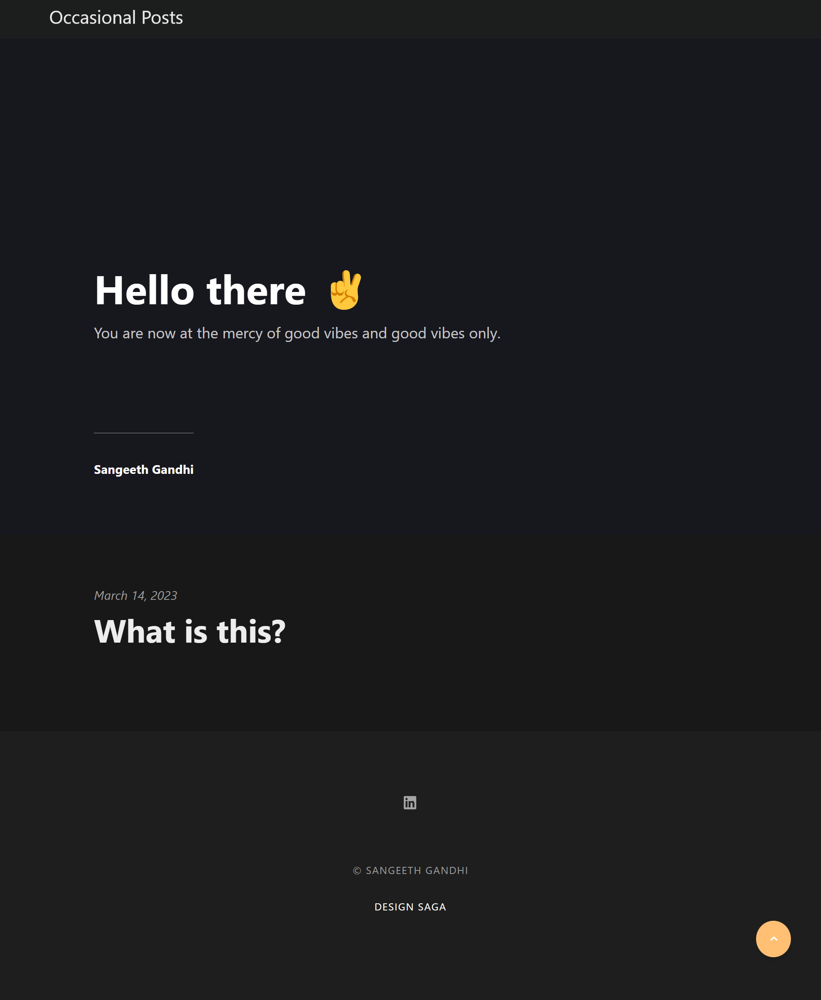

I have been meaning to write for a long time. Looking for the perfect excuse to sit down and write a couple of chapters of my best selling novel. I have this image of an idyllic cabin in the countryside, situated well over a lake, surrounded by a forest and me sitting in a room with with a window holding a freshly brewed cup of coffee writing. Also occasionally looking out.
Turns out if you wait for a moment (and it doesn't even have to be a perfect one) to write you won't get to writing anything. At least for me.
So you have to write when you can™.
I'd like to write and just get into the habit of it. Note down my streams of thought and try to become a better writer. Maybe a book comes out of it, maybe not, but it's all good either way.
I used to have a blog hosted over at WordPress but that got killed by it's own ambition (or lack of) and I couldn't even recognise it anymore. Also life got in the way[1].
Another reason I'm starting this up is as a way to document my projects and the things that I've been working on. I really enjoy building sites in general as well, so maybe this is an excuse to create one without any client pressures.
Right now, I'm hosting this page via Cloudflare, with the files on GitHub, and using Publii to build the static site. As of when this post is published (which is 14-03-2023) here's what it looks like:
Thanks for reading. ❤️
As we all know, this is the excuse of the lazy person. Unless of course other more important things get in the way. 🙃 ↩︎